1.1 Constructing Noisy Training Inputs
A single noise sample is interpolated with the original image at three time steps.
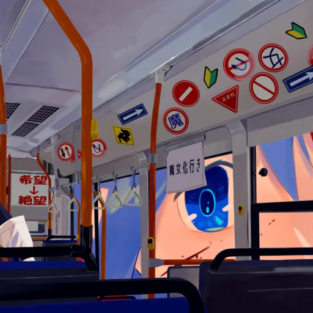
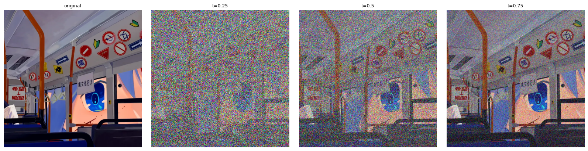
Flow matching, conditional generation, and creative applications with pretrained flow models.
The flow path is xt = (1 − t)ε + tx1: t = 0 is noise and t = 1 is the clean image.
A single noise sample is interpolated with the original image at three time steps.


Gaussian blur is applied after restoring the clean-image amplitude. The panels compare blur strengths.
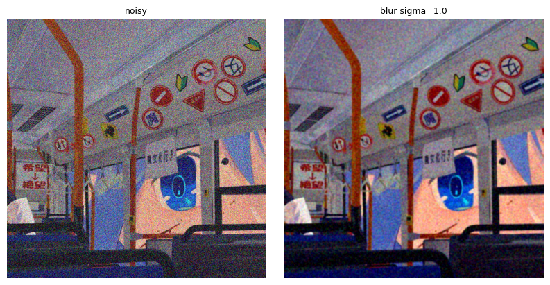
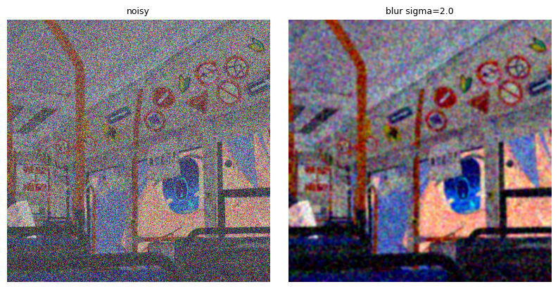
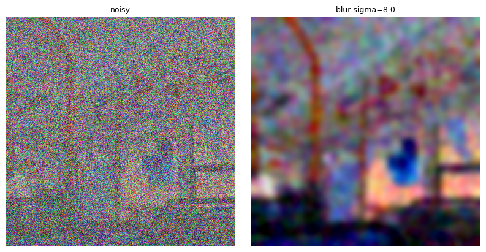
The model predicts a velocity once at each time, then uses it to estimate the clean image.
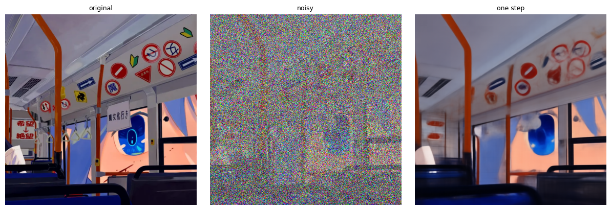
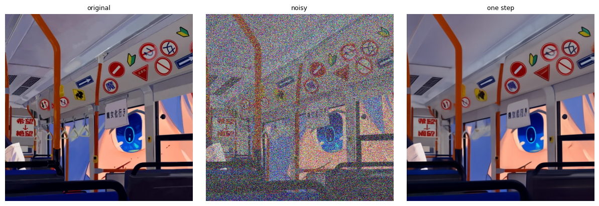
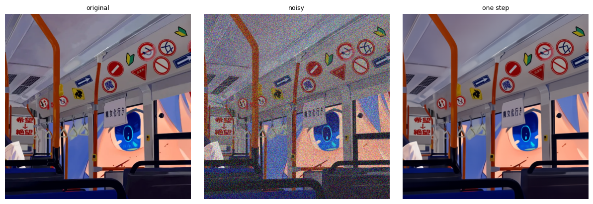
Predicted and ground-truth updates are compared with a per-pixel RGB RMS error map.
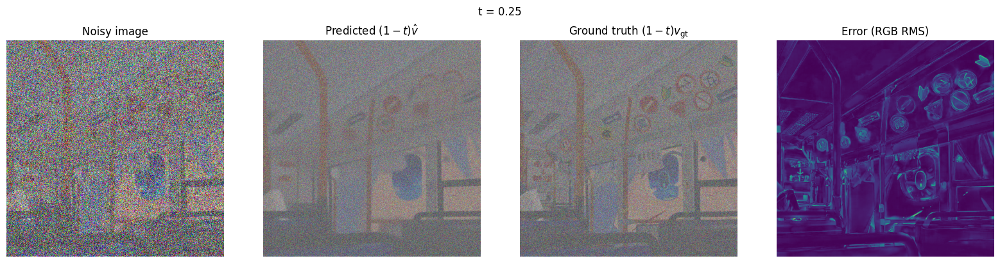
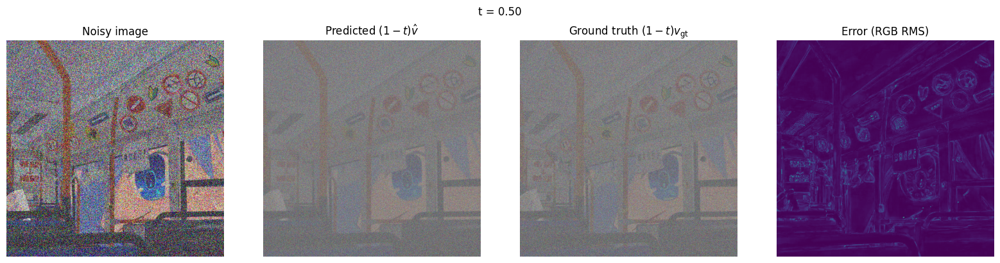
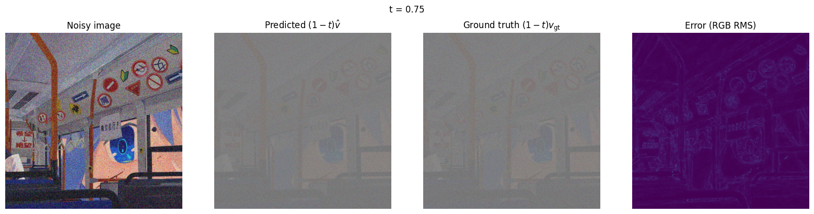
Repeated velocity updates reconstruct the image from the same noisy input; results are compared with blur and one-step denoising.
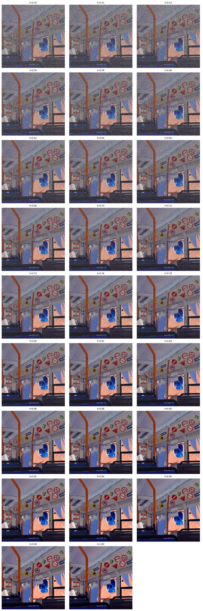
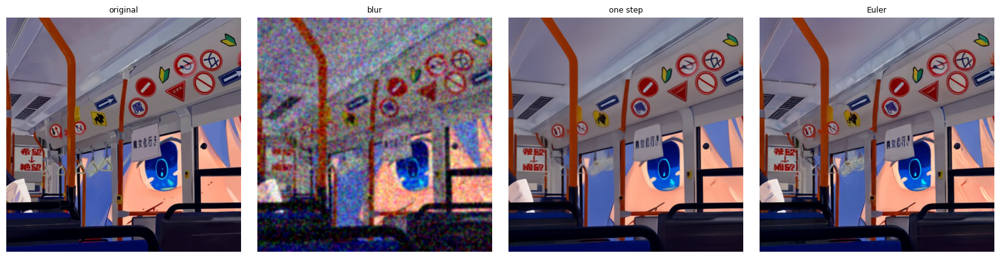
Five independent Gaussian noise samples are integrated with the prompt “a high quality photo.”

Classifier-free guidance combines conditional and unconditional velocity predictions. The prompt is “a high quality photo” and the guidance weight is 7.
Five guided samples use the same initial noise seeds as Section 1.6, making the guidance effect easier to compare.
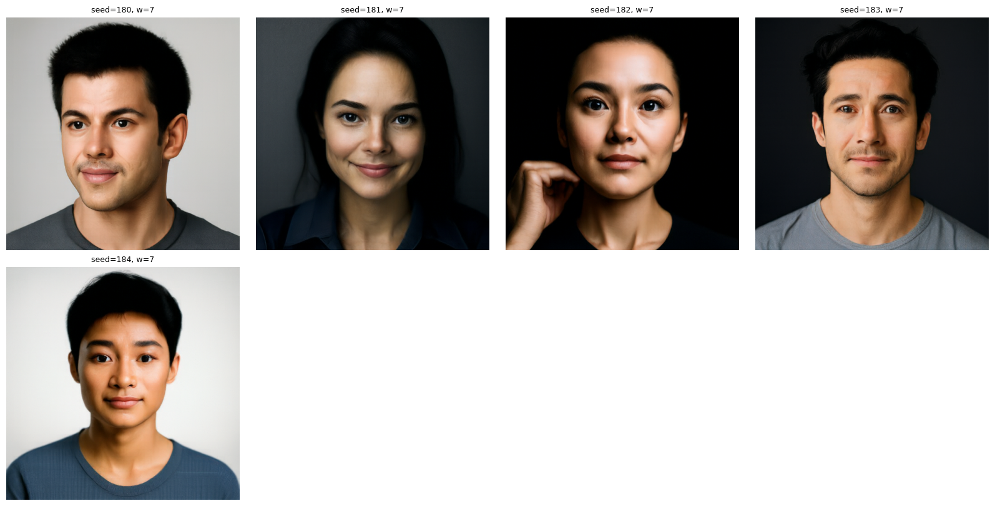
Image editing and visual illusions use Euler step size 0.02 and classifier-free guidance weight 7.
Seven starting times control how much of each source image is preserved during editing.
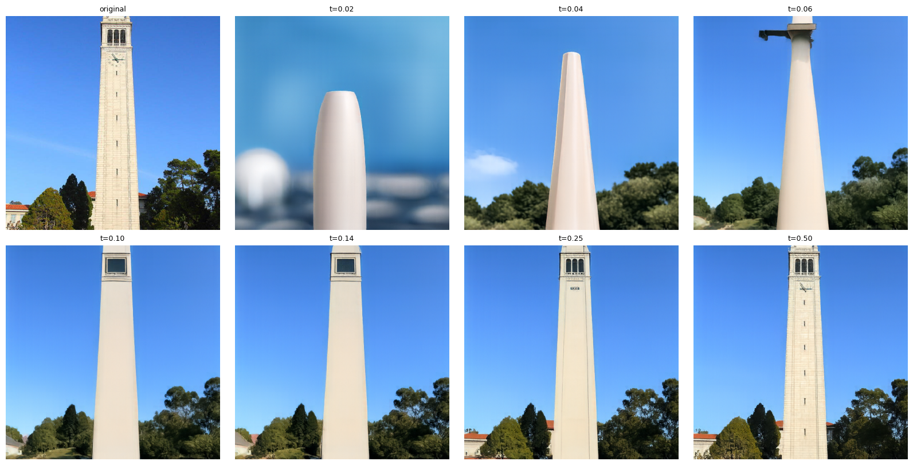
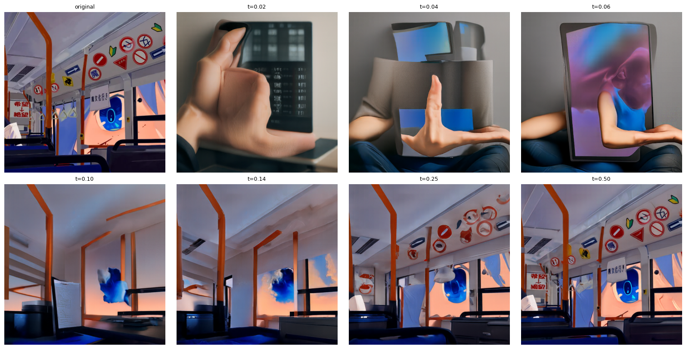
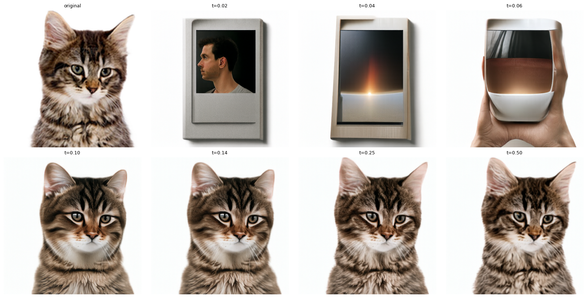
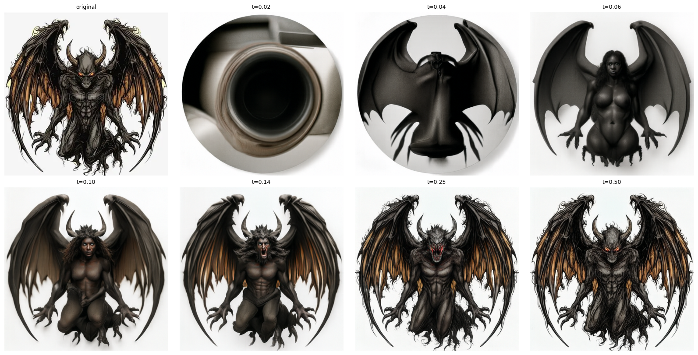
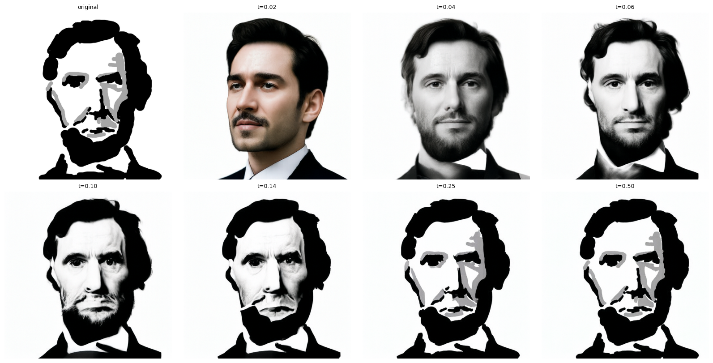
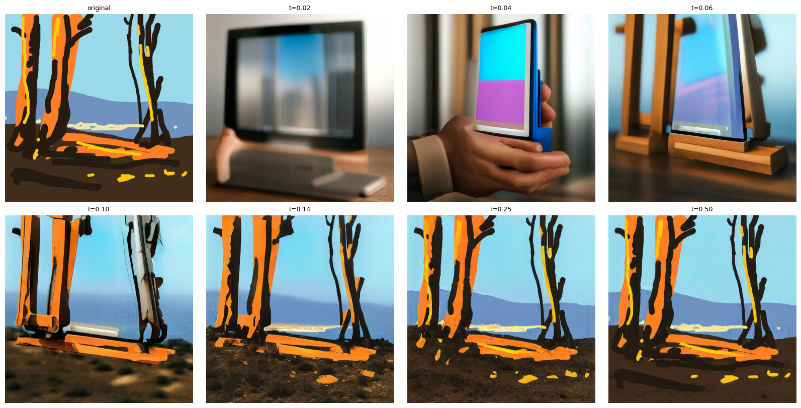
Text prompts steer edits of the Campanile and two personal images.
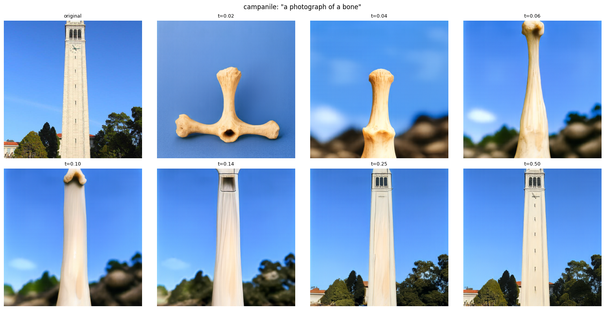
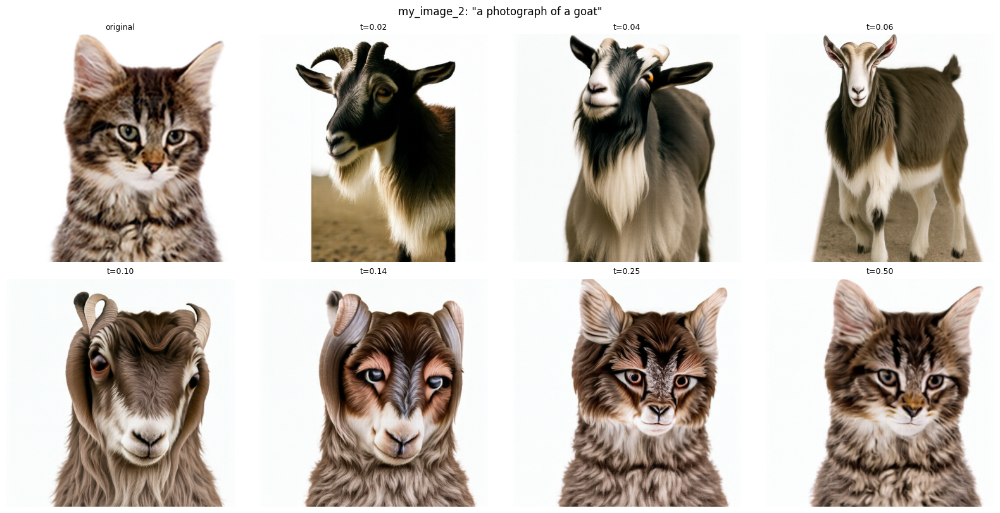
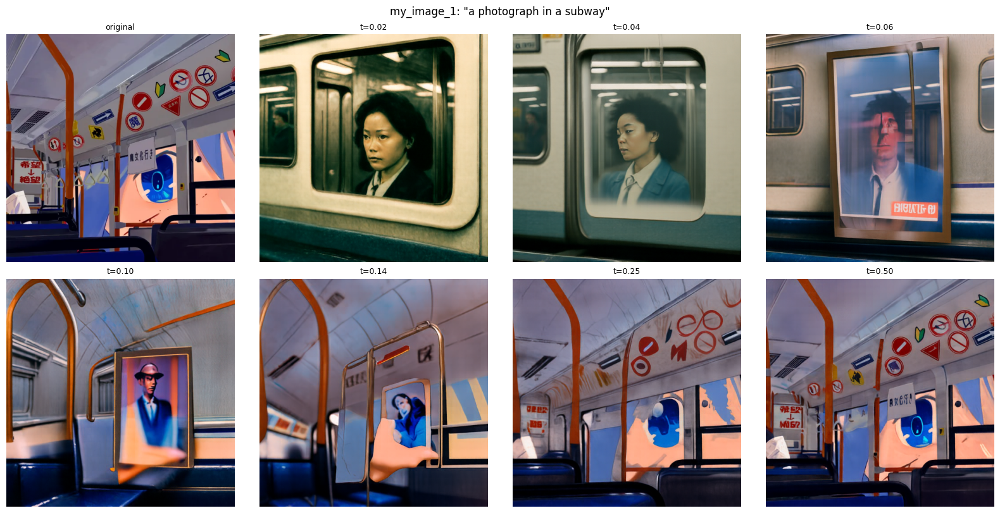
Each image is generated with a velocity field that averages two prompts under a 180° rotation.
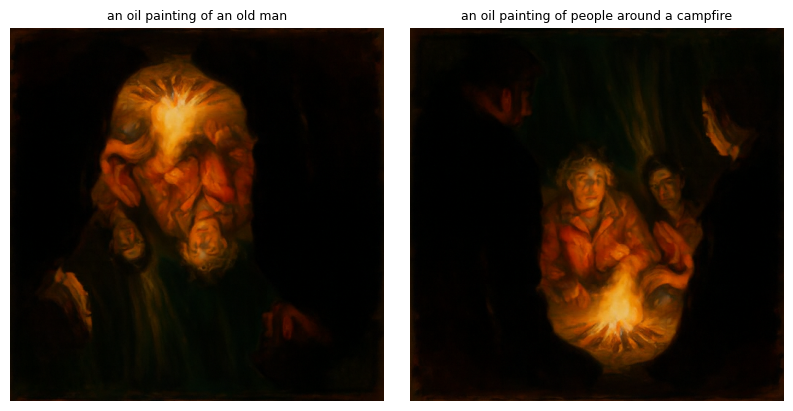
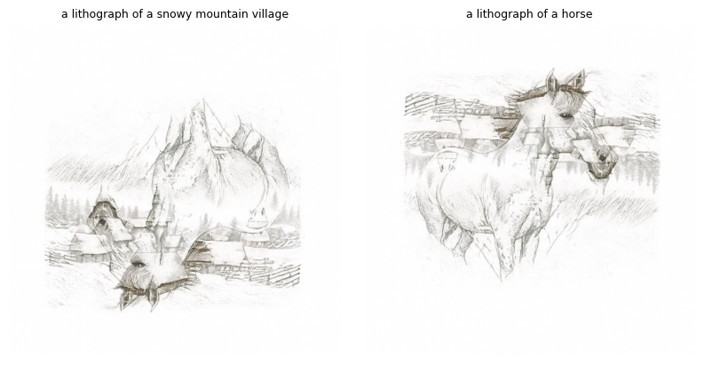
Low-frequency structure follows the distant prompt; high-frequency details follow the close-up prompt.
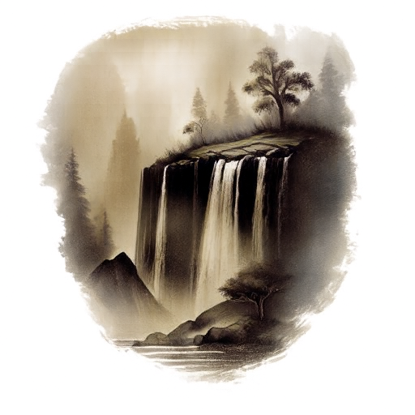
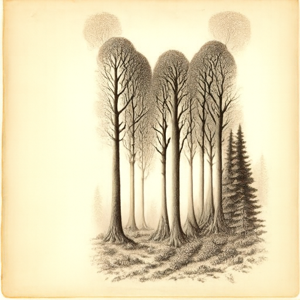